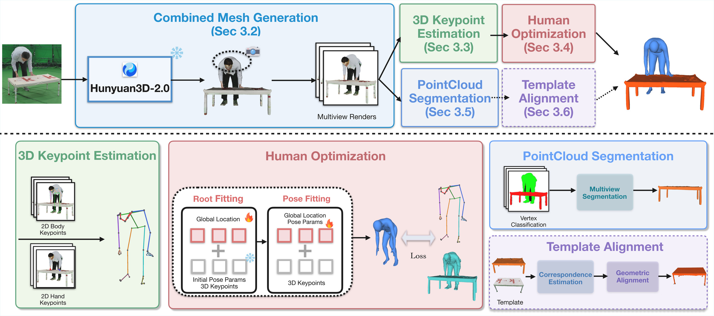

TL;DR
LRMs as an HOI scaffold
Large Reconstruction Models capture the relative human–object arrangement and proximity cues, giving a powerful geometric scaffold for interaction.
Explain, don't fit
Instead of ambiguous reprojection objectives, we reframe HOI as interpreting the LRM mesh: fit SMPL-H to the human part and optionally align a template to the object.
SOTA without contact
MILO reaches strong accuracy across InterCap, HODome and IMHD using weaker information than prior work — with no ground-truth contact.
Abstract
Estimation of Human-Object Interactions in 3D (3D HOI) is a fundamental problem in 3D computer vision with broad applications in AR/VR, robotics, and embodied AI. However, HOI estimation remains challenging due to depth ambiguities, occlusions, and object shape variability.
We present MILO, a framework that leverages the visual capabilities of Large Reconstruction Models to recover detailed 3D human-object reconstructions from a single image. Our key observation is that LRMs provide a geometric scaffold that preserves relative human-object arrangement and proximity cues. MILO segments the LRM mesh into human and object components, fits SMPL-H to the human part, and optionally aligns an object template to the object part. MILO achieves strong reconstruction accuracy across multiple benchmarks and interaction scenarios.
Results on in-the-wild images from the PICO-db dataset
Method

Results
InterCap
HODome
IMHD
BibTeX
@inproceedings{chatterjee2026milo,
title = {Reconstructing Humans and Objects in Interaction
using Large Reconstruction Models},
author = {Chatterjee, Agniv and Pavlakos, Georgios},
booktitle = {European Conference on Computer Vision (ECCV)},
year = {2026}
}
Acknowledgements
This research was supported by NSF-2504906, and 2544200; gifts from Adobe, Google, and Nvidia; and computing support on the Vista GPU Cluster through the Center for Generative AI (CGAI) and the Texas Advanced Computing Center (TACC) at the University of Texas at Austin.
We thank the authors of InterCap, HODome, IMHD and PICO for the benchmarks, and the developers of Hunyuan3D-2.0, HMR2.0, HaMeR, ViTPose and SMPL-H whose models MILO builds upon.